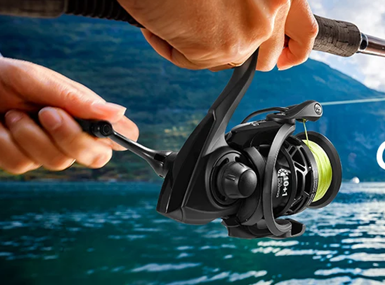
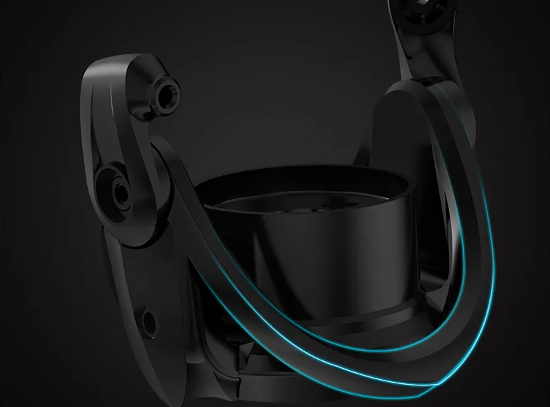
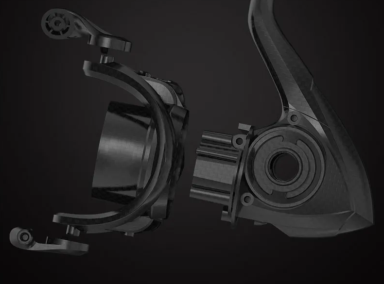

¿Merece la pena el Piscifun Carbon X II en 2026?
El Piscifun Carbon X II se ha convertido en uno de los carretes más vendidos en AliExpress en 2026 gracias a su ligereza extrema y precio competitivo. Pero… ¿realmente merece la pena o es puro marketing?
Sí, especialmente si buscas un carrete ligero y barato para eging o spinning ligero. No es el más refinado del mercado, pero por su precio es difícil encontrar algo mejor.
Después de probarlo en eging y spinning ligero durante varias jornadas, te cuento lo bueno, lo malo y si de verdad puede competir con Shimano y Daiwa.
Nota: Este análisis está basado en uso real en costa y agua salada durante varias semanas.
¿Qué lo hace especial?
Su construcción en carbono lo hace extremadamente ligero: solo 155g en tamaño 1000. En cañas ligeras, el conjunto se siente brutalmente equilibrado.
- Suavidad: 10+1 rodamientos
- Sin holguras: manivela roscada
- Freno: progresivo y fiable
Gestión de línea y durabilidad
El bobinado es uniforme incluso con trenzados finos. El eje de acero reforzado aguanta bien la presión y los rodamientos sellados ayudan en ambiente salino.
¿Para qué pesca lo recomiendo?
- Eging: ideal (tamaño 2000)
- Rockfishing: perfecto en 1000
- Spinning ligero: muy válido
Piscifun Carbon X II vs Shimano y Daiwa
¿Puede competir con marcas top? Sí, pero con matices:
- Vs Shimano Sahara: más ligero, menos refinado
- Vs Daiwa Legalis: similar rendimiento, peor control de calidad
- Vs gama alta: no llega, pero cuesta la mitad
Pros y Contras
- ✅ Muy ligero
- ✅ Buen freno
- ✅ Gran calidad-precio
- ❌ QC irregular
- ❌ Menos refinado
- ❌ Sin anti-reversa (1000)
Especificaciones
| Modelo | Peso | Ratio | Freno |
|---|---|---|---|
| 1000 | 155g | 5.2:1 | 10kg |
| 2000/3000 | 205g | 6.2:1 | 10kg |
Veredicto final
Si buscas un carrete ligero por menos de 70€, es de lo mejor que puedes comprar. No es perfecto, pero ofrece muchísimo por su precio.
Si buscas más opciones similares, puedes ver nuestra comparativa de carretes de pesca baratos.
🔥 Suele agotarse en campañas de AliExpress — comprueba disponibilidad
🛒 Ver Precio Actual en AliExpressPreguntas frecuentes
¿Es bueno para eging?
Sí, especialmente el tamaño 2000.
¿Mejor que Shimano?
Más barato, pero menos duradero.
¿Se puede usar en mar?
Sí, pero conviene aclararlo tras cada uso.